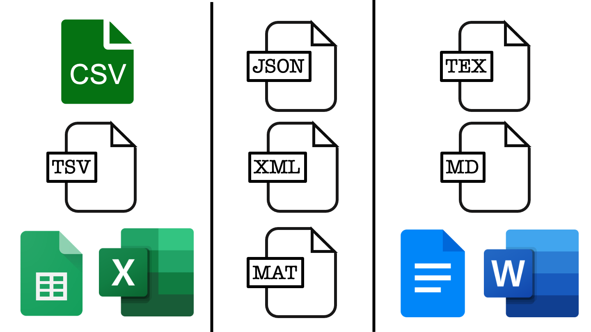

2 Naming Files
Note
Effective Data Science is still a work-in-progress. This chapter should be readable but is currently undergoing final polishing.
If you would like to contribute to the development of EDS, you may do so at https://github.com/zakvarty/data_science_notes.
2.1 Introduction
“There are only two hard things in Computer Science: cache invalidation and naming things.”
Phil Karlton, Netscape Developer
When working on a data science project we can in principle name directories, files, functions and other objects whatever we like. In reality though, using an ad-hoc system of naming is likely to cause confusion, headaches and mistakes. We obviously want to avoid all of those things, in the spirit of being kind to our current colleges and also to our future selves.
Coming up with good names is an art form. Like most art, naming things is an activity that you get better at with practice. Another similarity is that the best naming systems don’t come from giving data scientists free reign over their naming system. Like all art, the best approaches to naming things give you strong guidelines and boundaries within which to express your creativity and skill.
In this lecture we’ll explore what these boundaries and what we want them to achieve for us. The content of this lecture is based largely around a talk of the same name given by Jennifer Bryan and the tidyverse style guide, which forms the basis of Google’s style guide for R programming.
2.2 Naming Files
We’ll be begin by focusing in on what we call our files. That is, we’ll first focus on the part of the file name that comes before the dot. In the second part of this video, we’ll then cycle back around to discuss file extensions.
2.2.1 What do we want from our file names?
Before we dive into naming files, we should first consider what we want from the file names that we choose. There are three key properties that that we would like to satisfy.
- Machine Readable
- Human Readable
- Order Friendly
Thee first desirable property is for file names to be easily readable by computers, the second is for the file names to be easily readable by humans and finally the file names should take advantage of the default ordering imposed on our files.
This set of current file names is sorely lacking across all of these properties:
abstract.docx
Effective Data Science's module guide 2022.docx
fig 12.png
Rplot7.png
1711.05189.pdf
HR Protocols 2015 FINAL (Nov 2015).pdfWe want to provide naming conventions to move us toward the better file names listed below.
2015-10-22_human-resources-protocols.pdf
2022_effective-data-science-module-guide.docx
2022_RSS-conference-abstract.docx
fig12_earthquake-timeseries.png
fig07_earthquake-location-map.png
ogata_1984_spacetime-clustering.pdfLet’s take a few minutes to examine what exactly we mean by each of these properties.
2.2.2 Machine Readable
What do we mean by machine readable file names?
- Easy to compute on by deliberate use of delimiters:
-
underscores_separate_metadata,hyphens-separate-words.
-
- Play nicely with regular expressions and globbing:
- avoid spaces, punctuation, accents, cases;
rm Rplot*.png
Machine readable names are useful when:
managing files: ordering, finding, moving, deleting:
extracting information directly from file names,
working programmatically with file names and regex.
When we are operating on a large number of files it is useful to be able to work with them programmatically.
One example of where this might be useful is when downloading assessments for marking. This might require me to unzip a large number of zip files, copying the pdf report from each unzipped folder into a single directory and all of the R scripts from each unzipped folder into another directory. The marked scripts and code then need to be paired back up in folders named by student, and re-zipped ready to be returned.
This is monotonously dull and might work for ~50 students but not for ~5000. Working programmatically with files is the way to get this job done efficiently. This requires the file names to play nicely with the way that computers interpret file names, which they regard as a string of characters.
It is often helpful to have some meta-data included in the file name, for example the student’s id number and the assessment title. We will use an underscore to separate elements of meta-data within the file name and a hyphen to separate sub-elements of meta-data, for example words within the assessment title.
Regular expressions and globbing are two ideas from string manipulation that you may not have met, but which will inform our naming conventions. Regular expressions allow you to search for strings (in our case file names) that match a particular pattern. Regular expressions can do really complicated searches but become gnarly when you have to worry about special characters like spaces, punctuation, accents and cases, so these should be avoided in file names.
A special type of regular expression is called globbing where a star is used to replace any number of subsequent characters in a file name, so that here we can delete all png images that begin with Rplot using a single line of code. Globbing becomes particular powerful when you use a consistent structure to create your file names.
As in the assessment marking example, having machine readable file names is particularly useful when managing files, such as ordering, finding, moving or deleting them. Another example of this is when your analysis requires you to load a large number of individual data files.
Machine readable file names are also useful for extracting meta-information from files without having to open them in memory. This is particularly useful when the files might be too large to load into memory, or you only want to load data from a certain year.
The final benefit we list here is the scalability, reduction in drudgery and lowered risk for human error when operating on a very large number of files.
2.2.3 Order Friendly
The next property we will focus on also links to how computers operate. We’d like our file names to exploit the default orderings used by computers. This means starting file names with character strings or metadata that allow us order our files in some meaningful way.
2.2.3.1 Running Order
One example of this is where there’s some logical order in which your code should be executed, as in the example analysis below.
diagnositc-plots.R
download.R
runtime-comparison.R
...
model-evaluation.R
wrangle.RAdding numbers to the start of these file names can make the intended ordering immediately obvious.
00_download.R
01_wrangle.R
02_model.R
...
09_model-evaluation.R
10_model-comparison-plots.RStarting single digit numbers with a leading 0 is a very good idea here to prevent script 1 being sorted in with the tens, script 2 in with the twenties and so on. If you might have over 100 files, for example when saving the output from many simulations, use two or more zeros to maintain this nice ordering.
2.2.3.2 Date Order
A second example of orderable file names is when the file has a date associated with it. This might be a version of a report or the date on which some data were recorded, cleaned or updated.
2015-10-22_human-resources-protocols.pdf
...
2022-effective-data-science-module-guide.docxWhen using dates, in file names or elsewhere, you should conform to the ISO standard date format.
ISO 8601 sets an international standard format for dates:
YYYY-MM-DD.
This format uses four numbers for the year, followed by two numbers for the month and two numbers of the day of the month. This structure mirrors a nested file structure moving from least to most specific. It also avoids confusion over the ordering of the date elements. Without using the ISO standard a date like 04-05-22 might be interpreted as the fourth of May 2022, the fifth of April 2022, or the twenty-second of May 2004.
2.2.4 Human Readable
The final property we would like our file names to have is human readability. This requires the names of our files to be meaningful, informative and easily read by real people.
The first two of these are handled by including appropriate metadata in the file name. The ease with which these are read by real people is determined by the length of the file name and by how that name is formatted.
There are lots of formatting options with fun names like camelCase, PascalCase, and snake_case.
easilyReadByRealPeople (camelCase)
EasilyReadByRealPeople (PascalCase)
easily_read_by_real_people (snake_case)
easily-read-by-real-people (skewer-case)There is weak evidence to suggest that snake case and skewer case are most the readable. We’ll use a mixture of these two, using snake case between metadata items and skewer case within them. This has a slight cost to legibility, in a trade-off against making computing on these file names easier.
The final aspect that you have control over is the length of the name. Having short, evocative and useful file names is not easy and is a skill in itself. For some hints and tips you might want to look into tips for writing URL slugs. These are last part of a web address that are intended to improve accessibility by being immediately and intuitively meaningful to any user.
2.2.5 Naming Files - Summary
File names should be meaningful, informative and scripts end in
.rStick to letters, numbers underscores (
_) and hyphens (-).Pay attention to capitalisation
file.r\(\neq\)File.ron all operating systems.Show order with left-padded numbers or ISO dates.
2.3 File Extensions and Where You Work
So far we have focused entirely on what comes before the dot, that is the file name.Equally, if not more, important is what comes after the dot, the file extension.
example-script.r
example-script.py
project-writeup.doc
project-writeup.texThe file extension describes how information is stored in that file and determines the software that can use, view or run that file.
You likely already use file extensions to distinguish between code scripts, written documents, images, and notebook files. We’ll now explore the benefits and drawbacks of various file types with respect to several important features.
2.3.1 Open Source vs Proprietary File Types
The first feature we’ll consider is whether the file type is open source, and can be used by anyone without charge, or if specialist software must be paid for in order to interact with those files.
In the figure above, each column represents a different class of file, moving left to right we have example file types for tabular data, list-like data and text documents. File types closer to the top are open source while those lower down rely on proprietary software, which may or may not require payment.
To make sure that our work is accessible to as many people as possible we should favour the open source options like csv files over Google sheets or excel, JSON files over Matlab data files, and tex or markdown over a word or Google doc.
This usually has a benefit in terms of project longevity and scalability. The open source file types are often somewhat simpler in structure, making them more robust to changes over time less memory intensive.
To see this, let’s take a look inside some data files.
2.3.2 Inside Data Files
2.3.2.1 Inside a CSV file
CSV or comma separated value files are used to store tabular data.
In tabular data, each row of the data represents one record and each column represents a data value.
A csv encodes this by having each record on a separate line and using commas to separate values with that record. You can see this by opening a csv file in a text editor such as notepad.
The raw data stores line breaks using \n and indicates new rows by \r. These backslashed indicae that these are escape characters with special meanings, and should not be literally interpreted as the letters n and r.
#> [1] "Name,Number\r\nA,1\r\nB,2\r\nC,3"When viewed in a text editor, the example file would look something like this.
Name,Number
A,1
B,2
C,32.3.2.2 Inside a TSV file
TSV or tab separated value files are also used to store tabular data.
Like in a csv each record is given on a new line but in a tsv tabs rather than commas are used to separate values with each record. This can also be seen by opening a tsv file in a text editor such as notepad.
#> [1] "Name\tNumber\r\nA\t1\r\nB\t2\r\nC\t3"Name Number
A 1
B 2
C 3One thing to note is that tabs are a separate character and are not just multiple spaces. In plain text these can be impossible to tell apart, so most text editors have an option to display tabs differently from repeated spaces, though this is usually not enabled by default.
2.3.2.3 Inside an Excel file
When you open an excel file in a text editor, you will immediately see that this is not a human interpretable file format.
504b 0304 1400 0600 0800 0000 2100 62ee
9d68 5e01 0000 9004 0000 1300 0802 5b43
6f6e 7465 6e74 5f54 7970 6573 5d2e 786d
6c20 a204 0228 a000 0200 0000 0000 0000
0000 0000 0000 0000 0000 0000 0000 0000
.... .... .... .... .... .... .... ....
0000 0000 0000 0000 ac92 4d4f c330 0c86
ef48 fc87 c8f7 d5dd 9010 424b 7741 48bb
2154 7e80 49dc 0fb5 8da3 241b ddbf 271c
1054 1a83 0347 7fbd 7efc cadb dd3c 8dea
.... .... .... .... .... .... .... ....Each entry here is a four digit hexadecimal number and there are a lot more of them than we have entries in our small table.
This is because excel files can carry a lot of additional information that a csv or tsv are not able to, for example cell formatting or having multiple tables (called sheets by excel) stored within a single file.
This means that excel files take up much more memory because they are carrying a lot more information than is strictly contained within the data itself.
2.3.2.4 Indise a JSON file
JSON, or Java Script Object Notation, files are an open source format for list-like data. Each record is represented by a collection of key:value pairs. In our example table each entry has two fields, one corresponding to the Name key and one corresponding to the Number key.
[{
"Name": "A",
"Number": "1"
}, {
"Name": "B",
"Number": "2"
}, {
"Name": "C",
"Number": "3"
}]This list-like structure allows non-tabular data to be stored by using a property called nesting: the value taken by a key can be a single value, a vector of values or another list-like object.
This ability to create nested data structures has lead to this data format being used widely in a range of applications that require data transfer.
2.3.2.5 Inside an XML file
XML files are another open source format for list-like data, where each record is represented by a collection of key:value pairs.
<?xml version="1.0" encoding="UTF-8"?>
<root>
<row>
<Name>A</Name>
<Number>1</Number>
</row>
<row>
<Name>B</Name>
<Number>2</Number>
</row>
<row>
<Name>C</Name>
<Number>3</Number>
</row>
</root>The difference from a JSON file is mainly in how those records are formatted within the file. In a JSON file this is designed to look like objects in the Java Script programming language and in XML the formatting is done to look like html, the markup language used to write websites.
2.3.3 A Note on Notebooks
There are two and a half notebook formats that you are likely to use:
.rmd,.ipynbor alternatively.qmd.R markdown documents
.rmdare plain text files, so are very human friendly.JuPyteR notebooks have multi-language support but are not so human friendly (JSON in disguise).
Quarto documents offer the best of both worlds and more extensive language support. Not yet as established as a format.
In addition to the files you read and write, the files that you code in will largely determine your workflow.
There are three main options for the way that you code: first is typing it directly at the command line, second is using a text editor or IDE to write scripts and third is writing a notebook that mixes code, text and output together in a single document.
We’ll compare these methods of working soon, but first let’s do a quick review of what notebooks are available to you and why you might want to use them.
As a data scientist, there are two and a half notebook formats that you’re likely to have met before. The first two are Rmarkdown files for those working predominantly in R and interactive Python or jupyter notebooks for those working predominantly in Python. The final half format are quarto markdown documents, which are relatively new and extend the functionality of Rmarkdown files to provide multi-language support.
The main benefit of R markdown documents is that they’re plain text files, so they’re very human friendly and work very well with version control software like git. JuPyteR notebooks have the benefit of supporting code written in Julia, Python or R, but are not so human friendly - under the hood these documents are JSON files that should not be edited directly (because a misplaced bracket will break them!).
Quarto documents offer the best of both worlds, with plain text formatting and even more extensive language support than jupyter notebooks. Quarto is a recent extension of Rmarkdown, which is rapidly becoming popular in the data science community. Quarto also allows you to create a wider range of documents, including websites, these course notes and the associated slides.
Each format has its benefits and drawbacks depending on the context in which they are used and all have some shared benefits and limitations by nature of them all being notebook documents.
2.3.4 File Extensions and Where You Code
| Property | Notebook | Script | Command Line |
|---|---|---|---|
| reproducible | ~ | ✓ | X |
| readable | ~ | ✓ | ~ |
| self-documenting | ✓ | X | X |
| in production | X | ✓ | ~ |
| ordering / automation | ~ | ✓ | ~ |
The main benefit of notebook documents is that they are self-documenting, in that they can mix the documentation, code and report all into a single document. Notebooks also provide a level of interactivity when coding that is not possible when working directly at the command line or using a text editor to write scripts. This limitation is easily overcome by using an integrated development environment when scripting, rather than a plain text editor.
Writing code in .r files is not self-documenting but this separation of code, documentation and outputs has many other benefits. Firstly, the resulting scripts provide a reproducible and automatable workflow, unlike one-off lines of code being run at the command line. Secondly, using an IDE to write these provides you with syntax highlighting and code linting features to help you write readable and accurate code. Finally, the separation of code from documentation and output allows your work to be more easily or even directly put into production.
In this course we will advocate for a scripting-first approach to data science, though notebooks and command line work definitely have their place.
Notebooks are great as teaching and rapid development tools but have strong limitations with being put into production. Conversely, coding directly at the command line is perfect for simple one-time tasks but it leaves no trace of your workflow and leads to an analysis that cannot be easily replicated in the future.
2.3.5 Summary
Finally, let’s wrap things up by summarising what we have learned about naming files.
Before the dot we want to pick file names that machine readable, human friendly and play nicely with the default orderings provided to us.
Name files so that they are:
- Machine Readable,
- Human Readable,
- Order Friendly.
After the dot, we want to pick file types that are widely accessible, easily read by humans and allow for our entire analysis to be reproduced.
Use document types that are:
- Widely accessible,
- Easy to read and reproduce,
- Appropriate for the task at hand.
Above all we want to name our files and pick our file types to best match with the team we are working in and the task that is at hand.
2.4 Session Information
R version 4.2.2 (2022-10-31)
Platform: x86_64-apple-darwin17.0 (64-bit)
locale: en_US.UTF-8||en_US.UTF-8||en_US.UTF-8||C||en_US.UTF-8||en_US.UTF-8
attached base packages: stats, graphics, grDevices, datasets, utils, methods and base
other attached packages: readr(v.2.1.4)
loaded via a namespace (and not attached): Rcpp(v.1.0.11), rstudioapi(v.0.15.0), knitr(v.1.43), magrittr(v.2.0.3), hms(v.1.1.3), R6(v.2.5.1), rlang(v.1.1.1), fastmap(v.1.1.1), fansi(v.1.0.4), tools(v.4.2.2), xfun(v.0.39), utf8(v.1.2.3), cli(v.3.6.1), htmltools(v.0.5.5), yaml(v.2.3.7), digest(v.0.6.33), tibble(v.3.2.1), lifecycle(v.1.0.3), tzdb(v.0.4.0), htmlwidgets(v.1.6.2), vctrs(v.0.6.3), glue(v.1.6.2), evaluate(v.0.21), rmarkdown(v.2.23), pander(v.0.6.5), compiler(v.4.2.2), pillar(v.1.9.0), jsonlite(v.1.8.7), renv(v.0.16.0) and pkgconfig(v.2.0.3)